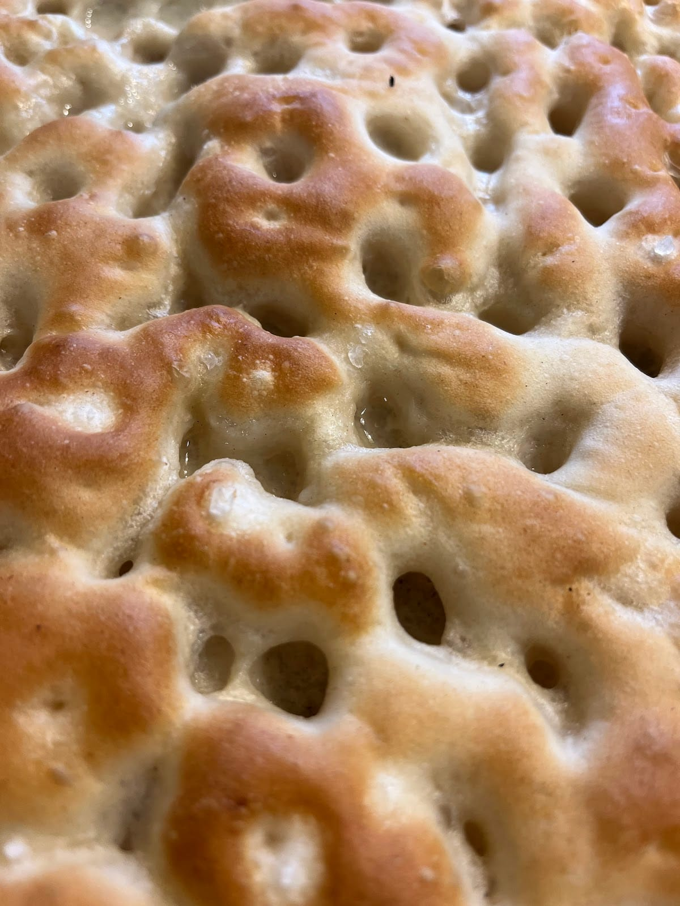

Focacceria · Milano Bicocca · dal 2006
Focaccia ligure.
e non solo
In teglia, bassa e morbida, con le fossette piene d'olio. Davanti all'Università, sullo stesso viale del Teatro degli Arcimboldi: a pranzo per chi studia, la sera per chi va a teatro.

La focaccia
Bassa, morbida, con le fossette piene d'olio.
È la focaccia come si fa a Genova: si stende in teglia, si preme con le dita, si bagna d'olio e si inforna. Poi si taglia a tranci per il pranzo o a cubetti per un vassoio, e si mangia con le mani. Queste sono le teglie che escono dal nostro forno.
Classica all'olio
Solo olio, sale grosso e le fossette. La base di tutto.
Pomodorini
Con origano, tagliata a tranci.
Olive
Le olive affondate nell'impasto prima di infornare.
Patate e pancetta
Fette di patata e pancetta sopra l'impasto.
Cotto e formaggio
Farcita, per un pranzo in piedi.
Verdure grigliate
Zucchine, melanzane, peperoni.
Dolce
Zuccherata in superficie: si mangia a colazione o a merenda.
Farcita al momento
Aperta e riempita davanti a voi: crudo, rucola, formaggi.
e non solo
focaccia.
Dallo stesso forno escono anche i panzerotti, che facciamo da quando abbiamo aperto, la pizza in teglia e i fagottini alla Nutella.
Panzerotti
Al forno, ripieni: pomodoro e mozzarella, ragù, verdure.
Pizza in teglia
Margherita, bufala e basilico, cotto e funghi, salsiccia: a tranci.
Fagottini alla Nutella
Il dolce della casa, con lo zucchero a velo.
Focaccine
Tonde, da farcire.
Calzoni
Chiusi e cotti in forno, col cartellino scritto a mano.
Piadine
Con il pollo, con i salumi, con le verdure: fatte al momento.
e non solo
a pranzo.
Il Teatro degli Arcimboldi è sullo stesso viale, pochi numeri civici più in là. Per questo giovedì, venerdì e sabato restiamo aperti fino alle 23:30: un trancio prima dello spettacolo, o un panzerotto uscendo dal concerto.
Di giorno, invece, siamo la pausa pranzo di chi studia e lavora in Bicocca: si sceglie dal banco, si mangia in piedi o si porta via.
Oggi
- lun10–19:30
- mar10–19:30
- mer10–19:30
- gio10–23:30
- ven10–23:30
- sab11–23:30
- domchiuso
e non solo
da studenti.
Molti ci conoscono negli anni dell'università. Poi arriva il giorno della laurea, e il rinfresco si fa qui: teglie di focaccia e pizzette tagliate a cubetti, i vassoi, i piatti e le flûte pronti sul banco.
Le stesse teglie vanno bene per una riunione in ufficio, un compleanno, una festa in casa. Si ordinano per telefono: chiamateci per tempo.
02 3966 2266e non solo
qui.
Tutto quello che c'è sul banco si può portare via, nelle nostre scatole. E se non potete passare, arriviamo noi.
- AsportoSi sceglie dal banco e si porta via, caldo, nella scatola col nostro logo.
- ConsegnaA casa o in ufficio con Deliveroo e Glovo.
- Su ordinazioneTeglie e vassoi per gruppi: una telefonata qualche giorno prima.
Dal 2006
Federico e Roberta.
Il negozio è piccolo: un banco, le teglie dietro il vetro, due pareti color terracotta piene di foto dei clienti. Chi entra parla con noi, sceglie con noi, e se ha fretta esce in due minuti. Siamo qui dal 2006, e lo scriviamo anche sulla tenda.
«Sentiti a casa, sempre»
Dove e quando.
Viale dell'Innovazione 11
20126 Milano · Bicocca
Davanti all'Università degli Studi di Milano-Bicocca, a due passi dalla stazione Greco Pirelli e dal Teatro degli Arcimboldi.
- Domenica chiusi.
- Lunedì, martedì e mercoledì chiudiamo alle 19:30.
| lunedì | 10:00 – 19:30 |
|---|---|
| martedì | 10:00 – 19:30 |
| mercoledì | 10:00 – 19:30 |
| giovedì | 10:00 – 23:30 |
| venerdì | 10:00 – 23:30 |
| sabato | 11:00 – 23:30 |
| domenica | chiuso |
La mappa è di Google: aprendola, Google riceve il tuo indirizzo IP e può usare i suoi cookie.
Domande che ci fanno spesso.
Dove si trova la Focacceria Ligure e Non Solo?
In Viale dell'Innovazione 11, a Milano Bicocca (CAP 20126): davanti all'Università e sullo stesso viale del Teatro degli Arcimboldi.
Fino a che ora siete aperti la sera?
Giovedì, venerdì e sabato fino alle 23:30. Da lunedì a mercoledì chiudiamo alle 19:30. La domenica siamo chiusi.
Fate teglie e vassoi per le feste di laurea?
Sì: teglie di focaccia e pizzette tagliate a cubetti, vassoi per il rinfresco di laurea, per l'ufficio o per una festa. Si ordinano per telefono, chiamando per tempo: 02 3966 2266.
Si può ordinare a domicilio?
Sì, con Deliveroo e Glovo. In negozio tutto si può portare via.
Che focaccia fate?
Focaccia genovese in teglia: bassa, morbida, con le fossette piene d'olio. Classica, con pomodorini, olive, cipolla, patate e pancetta, cotto e formaggio, verdure grigliate, e anche dolce.
Cosa c'è oltre alla focaccia?
Panzerotti, pizza in teglia, focaccine e calzoni, piadine, fagottini alla Nutella.